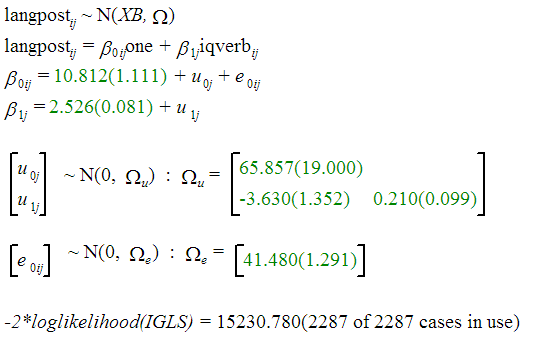

<h2 class="first" id="mlwin">Using MLwiN’s Command Interface</h2>
<p>In class we have illustrated the use of MLwiN using the Graphical
User Interface (GUI). For serious work you should (1) log the results,
and (2) use the Command Interface so you can store all your commands on
a file and ensure that you can reproduce your results at a later time.
The online help has a useful section on <em>Using the command
interface</em>. Here are some hints.</p>
<h4 id="log-file">Log File</h4>
<p>The command <code>logo</code><em><code>filename</code></em> logs the
results on a file. You can turn this feature on using
<code>logo 1</code> and off using <code>logo 0</code>. You must use the
last command to ensure that the log file is closed properly.</p>
<p>To log commands as well as results turn echo on using
<code>echo 1</code>. Note that if you read data and echo is on, the
entire dataset will be listed. For best results set <code>echo 0</code>
before reading data and <code>echo 1</code> afterwards.</p>
<h4 id="reading-data">Reading Data</h4>
<p>Here’s how to read the data from Snijders and Bosker (1999),
henceforth SB, that we have been using in class. Because MLwiN works
with local files I copied the data and scripts to d:. Make sure you use
the correct local or network filename for you. I also use
<code>put</code> to generate a vector of ones and <code>name</code> to
assign variable names.</p>
<p>It is usually a good idea to compute means or other summary
statistics to ensure you read the data OK.</p>
<pre class="mlwin"><code>echo 0
dinput c1-c4
d:\temp\snijders4.dat
echo 1
put 2287 1 c5
name c1 &quot;school&quot; c2 &quot;pupil&quot; c3 &quot;iqverb&quot; c4 &quot;langpost&quot; c5 &quot;one&quot;</code></pre>
<h4 id="variance-components">Variance Components</h4>
<p>Here’s how to define the level id’s and the response variable, and
how to fit a simple variance components model with constant variation at
levels 1 and 2. All explanatory variables must be declared using
<code>expl</code> and are automatically added to the fixed part. The
random structure is declared using <code>setv</code>. I use
<code>settings</code> to ensure all is well.</p>
<pre class="mlwin"><code>iden 1 &quot;pupil&quot; 2 &quot;school&quot;
response &quot;langpost&quot;
explanatory 1 &quot;one&quot;
setv 1 &quot;one&quot;
setv 2 &quot;one&quot;
settings</code></pre>
<p>The feedback of the last command is shown below:</p>
<pre><code>settings 
EXPLanatory variables in       one      
FPARameters                    one      
RESPonse variable in           langpost 
FSDErrors : uncorrected                 RSDErrors : uncorrected
MAXIterations  20   TOLErance     2     METHod is IGLS    BATCh is OFF
IDENtifying codes : 1-pupil, 2-school
 
LEVEL 2 RPM
         one      
one      1        
LEVEL 1 RPM(RESETTING OFF)
         one      
one      1      </code></pre>
<p>To fit a model using a macro file you must set batch mode on by using
<code>bath 1</code>, otherwise you get only one iteration. To list
results use <code>fixed</code> and <code>random</code>.</p>
<pre class="mlwin"><code>batch 1
start
fixed
random</code></pre>
<p>The output is shown below, just below each command</p>
<pre><code>batch 1 
 
Batch mode is ON
start 
 
Convergence achieved
fixed 
 
 
  PARAMETER            ESTIMATE     S. ERROR(U)   PREV. ESTIMATE
one                       40.36       0.4263              40.36 
random 
LEV.  PARAMETER       (NCONV)    ESTIMATE    S. ERROR(U)  PREV. ESTIM     CORR.
-------------------------------------------------------------------------------
 2    one      /one      ( 1)       19.42          2.921        19.34         1
-------------------------------------------------------------------------------
 1    one      /one      ( 2)       64.57          1.967        64.58 </code></pre>
<p>These are the results in SB-Table 4.1.</p>
<h4 id="random-intercepts">Random Intercepts</h4>
<p>To fit a random-intercept model we use <code>expl 1</code> to add an
explanatory variable:</p>
<pre class="mlwin"><code>expl 1 &quot;iqverb&quot;
start
fixed
random</code></pre>
<p>This is the output, again with results following each command:</p>
<pre><code>expl 1 &quot;iqverb&quot; 
start 
 
Convergence achieved
fixed 
 
 
  PARAMETER            ESTIMATE     S. ERROR(U)   PREV. ESTIMATE
one                       11.17       0.8788              11.16 
iqverb                    2.488      0.07005              2.488 
random 
LEV.  PARAMETER       (NCONV)    ESTIMATE    S. ERROR(U)  PREV. ESTIM     CORR.
-------------------------------------------------------------------------------
 2    one      /one      ( 1)       9.496          1.515        9.486         1
-------------------------------------------------------------------------------
 1    one      /one      ( 2)       42.23          1.286        42.23 </code></pre>
<p>This is the parallel lines model in SB-Table 4.2.</p>
<h4 id="random-slopes">Random Slopes</h4>
<p>To make the slope of verbal IQ random at the school level we use
<code>setv</code> specifying the level and variable name. I also use
<code>like</code> to print the likelihood</p>
<pre class="mlwin"><code>setv 2 &quot;iqverb&quot;
start
fixed
random</code></pre>
<p>Here’s the output</p>
<pre><code>setv 2 &quot;iqverb&quot; 
start 
 
Convergence achieved
fixed 
 
 
  PARAMETER            ESTIMATE     S. ERROR(U)   PREV. ESTIMATE
one                       10.81        1.111              10.81 
iqverb                    2.526      0.08145              2.526 
random 
LEV.  PARAMETER       (NCONV)    ESTIMATE    S. ERROR(U)  PREV. ESTIM     CORR.
-------------------------------------------------------------------------------
 2    one      /one      ( 2)       65.86             19        65.82         1
 2    iqverb   /one      ( 1)       -3.63          1.352       -3.628    -0.976
 2    iqverb   /iqverb   ( 1)        0.21        0.09914       0.2099         1
-------------------------------------------------------------------------------
 1    one      /one      ( 3)       41.48          1.291        41.48 
likelihood 
979232 spaces left on worksheet
 
-2*log(lh) is      15230.8</code></pre>
<p>The same results in the equation window look like this:</p>
<p></p>
